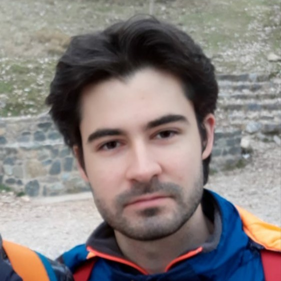

Pablo García Bas

Summary
I am a hardworking and dedicated person, with a strong interest in basic sciences (e.g. Physics or Mathematics), as well as computer science.
Currently I'm studying a double degree in computer science and mathematics at the University of Granada.
Education
- Bachelor of Science, Physics - University of Granada (2015-2020)
- Summer Research Assistant - Instituto Interuniversitario de Investigación del Sistema Tierra en Andalucía (jun. 2017 - aug. 2017)
- Erasmus+ Programme Stay - University of Wuppertal (oct. 2018 - aug 2019)
- Double degree in Computer Science and Mathematics - University of Granada (2021-2026)
Experience
Nothing to show here yet...
Technical Skills
Solid
Moderately strong
- Java
- Ruby
- Git
- Markdown
- Vim
- LaTex
In learning process
Certifications
Languages
- Goethe-Zertifikat B1 (Goethe-Institut e.V.) - Expedition: jun. 2021
- Certificate in Advanced English (Cambridge University Press & Assessment English) - Expedition: jun. 2021
Courses
Nothing to show here yet...